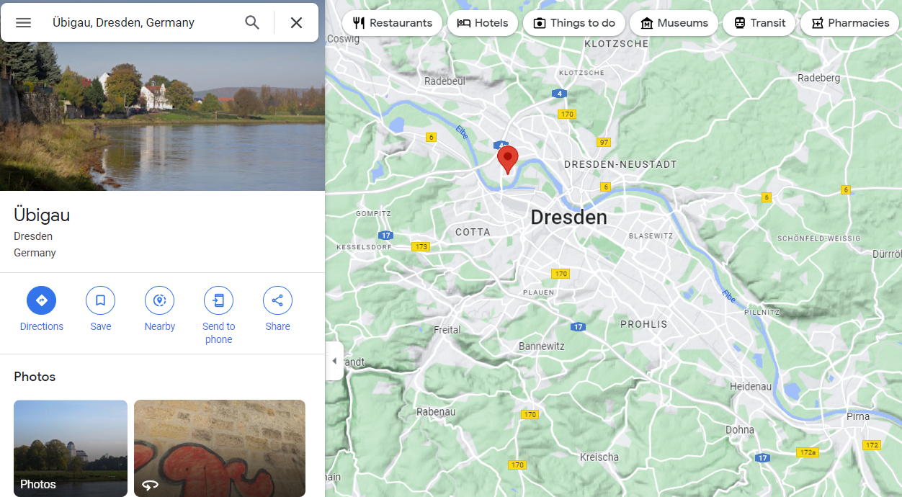
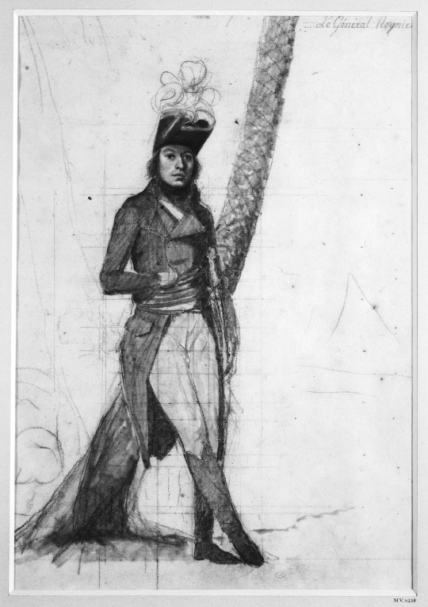
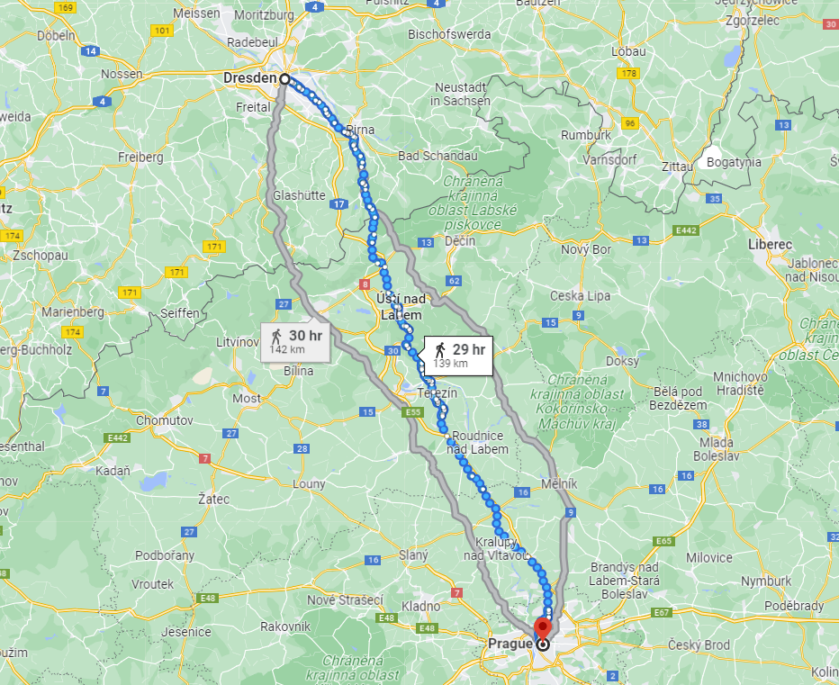

바우첸을 향하여 (5) - 대충대충 러시아군
게시: 2023-01-09T06:30:41+09:00
엘베 강 동쪽의 연합군이 작전 계획에 대해 아웅다웅 하고 있는 동안, 나폴레옹의 군단들은 속속 엘베 강변에 도착하고 있었습니다. 중앙부인 드레스덴에는 외젠 지휘에 막도날의 제11 군단, 마르몽의 제6 군단과 제1 기병군단이, 그 남쪽 프라이베르크(Freiberg)에는 베르트랑의 제4 군단이, 그리고 그 북쪽 마이센에는 로리스통의 제5 군단이 향했습니다. 나폴레옹은 5월 8일 드레스덴 인근에 도착했는데, 처음에는 뭔가 멋진 정치적 의미를 띤 근사한 입성을 생각했던 모양입니다. 그는 부관에게 지시하여, 드레스덴 시청의 책임자를 자신이 있는 인근 마을로 즉각 데려오게 했습니다. 그러나 드레스덴의 다리는 이미 파괴되어 불타고 있었고 시내 분위기도 어수선한 편이어서 그랬는지, 이후 불려온 시청 대표에게는 아주 차가운 어조로 엄청난 양의 빵과 고기, 포도주를 요구했습니다. 아마 드레스덴 사람들은 부드러운 어조로 독일 민족 어쩌고 하면서 군자금과 보급품을 부탁하던 프로이센군이 그리웠을 것입니다. 그 외에도 나폴레옹이 처리해야 할 일은 아주 많았습니다. 그는 외젠과 함께 끊어진 아우구스투스 다리와 그 건너편에 포진한 러시아군 수비대를 둘러보고는 이 다리를 수리하여 엘베 강을 건너는 것은 불가능하다고 현명하게 판단했습니다. 그가 이끌고 온 부대 중에는 부교병 부대(régiment des Pontonniers)가 포함되어 있었지만 정작 그들이 사용할 부교 장비들은 2주 후에나 도착할 예정이었습니다. 그런 장비들은 워낙 크고 무거워 아무래도 수송에 어려움이 많았기 때문이었습니다. 그는 즉각 명령을 내려 주변 강가에서 보트와 판재, 밧줄과 노동자들을 징발하도록 했습니다. 어디 다른 적절한 곳에 임시방편 자재로라도 부교를 만들어 볼 생각이었던 것입니다.

(위비가우(Übigau)는 드레스덴에서 엘베 강 하류쪽으로 약간 떨어진 곳에 있는 지점입니다. 지금은 드레스덴이 확장되면서 드레스덴의 일부가 되어 버렸습니다. 지도 오른쪽 아래, 즉 드레스덴의 상류쪽에 피르나(Pirna)라는 지명도 보입니다.) 그렇게 지시한 뒤, 적절한 도하 지점을 찾아 상류쪽의 피르나(Pirna) 일대에 이어 하류쪽 브리스니츠(Briesnitz) 마을을 둘러보던 나폴레옹은 브리스니츠의 강 건너 지점인 위비가우(Übigau)에서 눈이 번쩍 뜨이는 광경을 보게 됩니다. 러시아군이 보조 교량으로 설치했던 부교가 아직 불타고 있었는데 엘베 강의 좌안, 즉 프랑스군이 점령한 브리스니츠 쪽에서는 떨어져나가 1/3 정도가 불타고 있었지만 우안의 위비가우 쪽에는 아직 연결된 채였고 거의 손상되지 않은 채 물 위에 떠있었던 것입니다. 더욱 놀라운 것은 위비가우 쪽에서도 그 부교의 잔해를 지키고 있는 러시아군이 전혀 없다는 점이었습니다. 아마도 이 부교를 파괴하라는 명령을 받은 러시아군 부대에서는 그냥 브리스니츠 쪽에 묶인 것을 풀어놓고 그 쪽에 불을 지른 뒤, 그 부교 위를 걸어서 철수한 뒤 그냥 알아서 타도록 내버려 두고 가버린 모양이었습니다. 누구인지 이렇게 무성의했던 러시아군 부대장 덕분에 프랑스군은 작은 보트 1~2척을 이용하여 위비가우 쪽에 건너간 뒤 그 쪽 말뚝에 묶인 밧줄을 끊고 이 2/3짜리 부교 전체를 무사히 탈취해올 수 있었습니다. 나폴레옹의 고민이 거의 해결되는 순간이었습니다. 한편, 이들과는 별도로 훨씬 북쪽에서는 네의 제3 군단과 함께 토르가우로 향한 레이니에(Jean Louis Ebénézer Reynier)의 제7 군단이 5월 7일 순조롭게 토르가우 요새 앞에 도착했습니다. 그러나 레이니에는 과거 러시아 원정의 전우였던 요새의 작센 수비대 사령관 틸만(Thielmann) 장군으로부터 프랑스군 입장 불가라는 답변을 받고 깜짝 놀랐습니다. 틸만은 작센은 이번 전쟁에 있어 중립이므로 작센 국왕 프리드리히 아우구스투스의 명령이 없는 이상 프로이센군은 물론 프랑스군도 입성을 허락하지 않겠다는 입장이었습니다.

(이 그림은 이집트 원정 중의 레이니에의 모습으로서, 함께 원정에 참여했던 뒤뗴르트르(André Dutertre)의 작품입니다. 레이니에는 나폴레옹보다 2살 연하로서, 1685년 루이 14세가 낭트 칙령을 철회하여 프랑스의 개신교도인 위그노에 대한 박해가 시작되자 스위스로 도망친 위그노 집안 출신이었고, 그 때문에 출생지가 스위스 로잔이었습니다. 그는 프랑스 혁명이 일어나자 시민권을 회복하여 파리에서 국립 토목 기술 학교(École nationale des ponts et chaussées)에 19세의 나이로 입학했고, 2년 뒤 졸업과 동시에 포병으로 자원입대 하며 군생활을 시작했습니다. 그는 이집트 원정 때 나폴레옹을 처음 만났는데, 이집트에서 돌아온 이후 동료 장군과 결투 끝에 상대를 죽이는 바람에 2년 정도 군 보직을 받지 못했습니다. 이후 주로 이탈리아에서 활약하던 그는 1809년 바그람 전투에서 로바우 섬의 포병대를 맡았습니다. 이후 스페인 전선에서 싸우다 러시아 원정에 참가한 그는 작센 병사들로 이루어진 부대를 맡았으므로 작센과는 인연이 깊은 편이었습니다. 따라서 1813년 토르가우에서 작센 수비대의 저항을 받고는 꽤 당황했을 것입니다. 그런 당황스러운 사태는 1813년 후반부의 라이프치히 전투에서도 이어져, 그의 지휘 하에 있던 작센군이 갑자기 연합군 편으로 넘어갑니다. 결국 포로가 되었다가 1814년 초에 풀려난 그는 석방 2주만에 통풍으로 사망합니다.) 그렇다고 옛 부하들인 작센 수비대에게 대포알을 날리며 문을 열라고 할 수는 없었던 레이니에는 즉각 이 소식을 남쪽 드레스덴의 나폴레옹에게 알렸습니다. 바로 다음 날인 8일 이 소식을 접한 나폴레옹은 아주 시원시원하게 이 문제를 해결했습니다. 그는 당시 프라하에 있던 작센 국왕에게 48시간 이내에 드레스덴으로 튀어와 토르가우에게 성문을 열라는 명령을 내리라고 지시했습니다. 만약 48시간 이내에 이를 수행하지 않을 경우 작센은 동맹국이 아니라 점령지로 취급하겠다는 협박도 잊지 않았습니다.

(드레스덴과 프라하의 거리는 약 140km입니다. 48시간 안에 왕복하기에는 어려운 거리였습니다. 당시 프라하는 오스트리아의 영토였습니다. 연합군의 진격에 피난을 가야 했던 작센 국왕의 처지는 이해가 갔지만 프랑스측 동맹국인 바이에른이 아니라 중립국인 오스트리아로 가있었으니 나폴레옹의 눈에 작센 국왕이 이쁘게 보일 리가 없었습니다.) 드레스덴과 프라하는 무려 140km나 떨어진 곳으로서, 쾌속 파발마로 달려도 48시간 안에 달려오기는 어려운 먼 곳이었습니다. 그런데도 나폴레옹이 48시간이라고 못을 박은 것은 나름 현실적인 것이었습니다. 바로 몇 달 전, 러시아에서 소수의 일행만을 동반한 채 썰매와 마차를 타고 드레스덴을 거쳐 파리로 돌아갔던 나폴레옹 본인이 당시 하루 평균 160km를 가볍게 넘기며 달렸던 것입니다. 그러니 전령이 가는데 하루, 프리드리히 아우구스투스가 돌아오는데 하루, 48시간이면 충분했던 것이지요. 물론 충분치 않았습니다! 그러나 나폴레옹이 던지는 메시지는 간단했습니다. "눈썹이 바람에 휘날리도록 달려오라!" 나폴레옹도 실제로 작센 국왕이 48시간 안에 달려올 것이라고는 기대하지 않았던 모양입니다. 그는 드레스덴에 남아있던 왕실 인사들을 소환하여 당장 토르가우로 달려가 틸만 장군에게 성문 개방을 명령하라고 지시했습니다. 결국 틸만은 성문을 열어주었고, 대신 본인은 그대로 연합군 측에 망명했습니다. 이렇게 토르가우를 확보한 나폴레옹은 레이니에에게 토르가우에 남도록 하고, 네에게는 다시 더 북진하여 비텐베르크 요새를 확보하도록 합니다. 이렇게 5월 8일 바쁜 하루를 보낸 나폴레옹은 다음 날 새벽 3시에 일어나 구체적인 작전 계획을 세웠습니다. 그는 전날 확보한 러시아군의 부교를 이용하여 드레스덴 인근에서 엘베 강을 건너기로 결심합니다. 부교 자체가 연약한 것이었으므로 원래 부교가 놓였던 브리스니츠-위비가우에 다시 그 부교를 놓고 강습 도강할 예정이었습니다. 하지만 아무리 러시아군 주력부대가 라더베르크로 물러선 상태라고 해도, 엘베 강 우안에 있는 드레스덴의 신시가지 노이슈타트(Neustadt)에는 밀로라도비치가 거느린 강력한 후위부대가 두 눈에 불을 켜놓고 강변을 지키고 있었습니다. 아무리 숫자가 많아도 강물 위에 조각배를 엮은 부교로 떠있는 상황에서는 러시아군의 대포밥이 될 뿐이었습니다. 나폴레옹은 대체 어떻게 강을 건너려고 했던 것일까요? Source : The Life of Napoleon Bonaparte, by William Milligan Sloane Napoleon and the Struggle for Germany, by Leggiere, Michael V